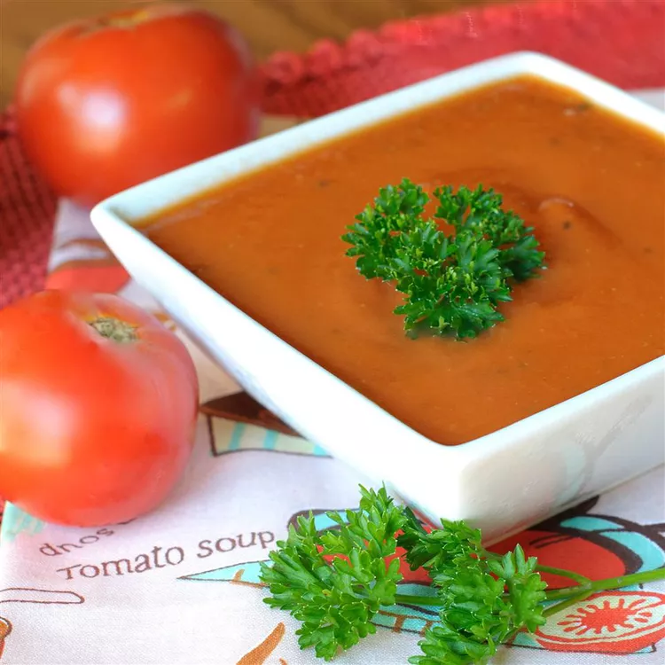

Fresh Tomato Soup

This tomato soup recipe is simple, quick, and perfect to make when tomatoes are ripe in gardens and farmers' markets for a delicious summertime treat. Delicious with garlic bread or a grilled cheese sandwich.
Ingredients for Tomato Soup
- Tomatoes: This recipes starts with fresh tomatoes for good reason. It makes the best tomato soup.
- Chicken broth: Using broth will help make this more of a soup and less like a sauce.
- Garlic: The recipe calls for about four cloves, but feel free to use however much your heart desires.
- Onion: A yellow or white onion would be ideal for this soup.
- Butter: Use butter to make a roux, a thickening agent made from flour and fat.
- Flour: Use all-purpose flour to make your roux.
- Sugar and Salt: Add these two seasonings until the soup suites your tastebuds.
How to Make Tomato Soup
- Boil the tomatoes, onion, garlic, and broth.
- Run the mixture through a food mill into a large bowl.
- Make a roux.
- Add the tomato mixture and season.
Ingredients
- 4 cups chopped fresh tomatoes
- 2 cups chicken broth
- 4 cloves garlic
- 1 large slice of onion
- 2 tablespoons butter
- 2 tablespoons all-purpose flour
- 2 teaspoons white sugar, or to taste
- 1 teaspoon salt, or to taste
Directions
- Combine tomatoes, chicken broth, garlic cloves, and a large slice of onion in a stockpot over medium heat. Bring to a boil, and gently simmer for about 20 minutes to blend flavors.
- Remove from heat and run the mixture through a food mill into a large bowl, or pan. Discard any stuff left over in the food mill.
- Melt butter over medium heat in the now empty stockpot. Stir in flour to make a roux by cooking, whisking constantly, until mixture turns medium brown.
- Gradually whisk in a bit of the tomato mixture to prevent lumps from forming, then stir in the rest.
- Season with sugar and salt to taste.
- Serve hot and enjoy!